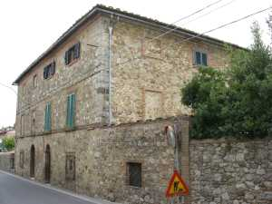

L’edificio su tre piani a pianta quadrata detto “il Palazzaccio” si affaccia sulla strada principale ed è in forte somiglianza costruttiva con la villa dalla quale è separato da un giardino. Inutile chiedersi quando sia sorto il fabbricato perché non c’è risposta essendo probabilmente una delle tante case che già nel Trecento costituivano il borgo di Querciagrossa e trasformata nel tempo fino ad assumere l’aspetto odierno che potrebbe risalente agli inizi del Seicento, di pochi anni posteriore alla villa della quale fungeva da annesso agricolo.
Nel Settecento è abitazione del colono delle monache della Madonna e nei suoi fondi sono compresi tutti i servizi poderali come stalle e cantina. La capanna sorgeva a una distanza di cento metri, verso la chiesa.
Con l’acquisizione Andreucci nel 1785 circa, il Palazzaccio cambia destinazione e da casa colonica diviene "fattoria" di recente memoria, utilizzata per i poderi della famiglia e adibita a cantina, oliviera, granaio all’ultimo piano, con un appartamento per un salariato o il fattore.
A fine Settecento risale la costruzione di un lungo muro che partiva dall’edificio e arrivava alla chiesa, isolando completamente la proprietà dalla strada principale, e si contrapponeva all’altro esistente al di là della strada, si che questa passava tra i due muri di media altezza.
Da servizio agricolo, il Palazzaccio passò a più nobili destini quando gli ridiede vita la famiglia Mori che vi abiterà provvisoriamente dal 1916, per tre anni, prima di trasferirsi nella villa. Vi abiterà la maestra dal 1920 e sarà sede dell’aula scolastica dal 1921 al 1928. Lavori di ristrutturazione vi ricavarono quattro appartamenti per altrettanti pigionali, mentre al piano terra rimasero l’oliviera, la cantina e, sulla strada, un piccolo ambiente che ospitò il macellaio e il calzolaio nel dopoguerra.
Altri lavori effettuati dai Mori avevano realizzato ai piedi del Palazzaccio il nuovo spazioso ambiente per le macchine agricole, l’officina e la falegnameria, e tutto chiuso da un grande cancello.
Con la divisione della famiglia Mori, il Palazzaccio passò alla vedova di Umberto, Dina Anichini, e alle sue tre figlie che vi abitarono per diversi anni prima di ristrutturarlo e vendere i quartieri.
Tra le famiglie che vi hanno dimorato si ricordano nell’Ottocento il fattore Raffaello Socci e il fattore Bucci fino al 1927. Nel Novecento, tra gli inquilini, gli Oretti intorno al 1911/13, il Giachini dal 1928 poi il Nelli, Angiolo Losi, i Carletti, i Rossi ed Ezio Nencioni.
Addossato al Palazzaccio il tetto dello Stanzone, ambiente di notevole altezza costruito dai Mori tra il 1916 e il 1919 per deposito delle macchine tribbiatrici e trattori
Inizio pagina
Vai all'Indice dei Capitoli